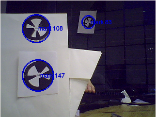

ALLandMarkDetection¶
NAOqi Vision - Overview | API | Tutorials
See also
What it does¶
ALLandMarkDetection is a vision module, in which NAO recognizes special landmarks with specific patterns on them. We call those landmarks Naomarks.

You can use the ALLandMarkDetection module for various applications. For example, you can place those landmarks at different locations in NAO’s field of action. Depending on which landmark NAO detects, you can get some information on NAO’s location. Coupled with other sensor information, it can help you build a more robust localization module.
How it works¶
Naomarks¶
Naomarks consist of black circles with white triangle fans centered at the circle’s center. The specific location of the different triangle fans is used to distinguish one Naomark from the others.
Links with ALVideoDevice¶
The Landmark detection module is a GVM, a client module registering itself to the VIM (Vision Input Module).
See ALVideoDevice - Advanced section, for further details on:
- how Vision Input Module (VIM) manages the video source and provides every client module (GVM) an access to the video stream,
- how the vision system is architectured.
Performance and Limitations¶
Lighting: the landmark detection has been tested under office lighting conditions - ie, under 100 to 500 lux. As the detection itself relies on contrast differences, it should actually behave well as long as the marks in your input images are reasonably well contrasted. If you feel that the detection is not running well, make sure the camera auto gain is activated - via the Monitor interface - or try to adjust manually the camera contrast.
Size range for the detected Marks:
Minimum: ~0.035 rad = 2 deg. It corresponds to ~14 pixels in a QVGA image
Maximum: ~0.40 rad = 23 deg. It corresponds to ~160 pixels in a QVGA image
Tilt: +/- 60 deg (0 deg corresponds to the mark facing the camera)
Rotation in image plane: invariant.
Getting started¶
Printing Naomarks¶
You can find Naomarks on the CD in the folder Media (Naomark.pdf).
Viewing detection results with Monitor¶
To get a feel of what the ALLandMarkDetection can do, you can use Monitor and launch the vision plugin. Activate the LandMarkDetection checkbox and start the camera acquisition. Then, if you place a Naomark somewhere in the camera’s field of vision, Monitor should report the detected naomarks by circling them on the video output pane. In addition, the naomark identifier is displayed next to the circle and should correspond to real naomark’s identifier.
Starting the detection¶
To start the naomark detection function, use a ALLandMarkDetection proxy to subscribe to ALLandMarkDetection. In Python, the code for this subscription is:
from naoqi import ALProxy
IP = "your_robot_ip"
PORT = 9559
# Create a proxy to ALLandMarkDetection
markProxy = ALproxy("ALLandMarkDetection", IP, PORT)
# Subscribe to the ALLandMarkDetection extractor
period = 500
markProxy.subscribe("Test_Mark", period, 0.0 )
The period parameter specifies - in milliseconds - how often ALLandMarkDetection tries to run its detection method and outputs the result in an ALMemory output variable called LandmarkDetected.
Once at least one subscription to the ALLandMarkDetection module is made, ALLandMarkDetection starts to run.
Getting the results¶
The ALLandMarkDetection module writes its results in a variable in ALMemory (LandmarkDetected).
As you surely want to use the detection results directly in your code, you can check the ALMemory’s variable on a regular basis. To do this, just create a proxy to ALMemory, and retrieve the landmark variable using getData(“LandmarkDetected”) from the ALMemory proxy.
from naoqi import ALProxy
IP = "your_robot_ip"
PORT = 9559
# Create a proxy to ALMemory.
memProxy = ALProxy("ALMemory", IP, PORT)
# Get data from landmark detection (assuming face detection has been activated).
data = memProxy.getData("LandmarkDetected")
How the result variable is organized¶
If no naomarks are detected, the variable is empty. More precisely, it is an array with zero element, (ie, printed as [ ] in python).
If N naomarks are detected, then the variable structure consists of two fields:
[ [ TimeStampField ] [ Mark_info_0 , Mark_info_1, . . . , Mark_info_N-1 ] ] with:
- TimeStampField = [ TimeStamp_seconds, Timestamp_microseconds ]. This field is the time stamp of the image that was used to perform the detection.
- Mark_info = [ ShapeInfo, ExtraInfo ]. For each detected mark, we have one
Mark_info field.
- ShapeInfo = [ 0, alpha, beta, sizeX, sizeY, heading]. alpha and beta represent the Naomark’s location in terms of camera angles - sizeX and sizeY are the mark’s size in camera angles - the heading angle describes how the Naomark is oriented about the vertical axis with regards to NAO’s head.
- ExtraInfo = [ MarkID ] . Mark ID is the number written on the naomark and which corresponds to its pattern.